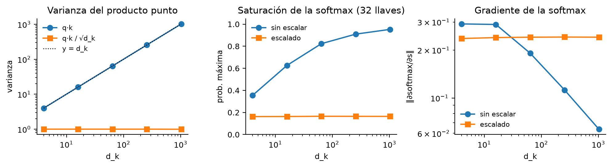
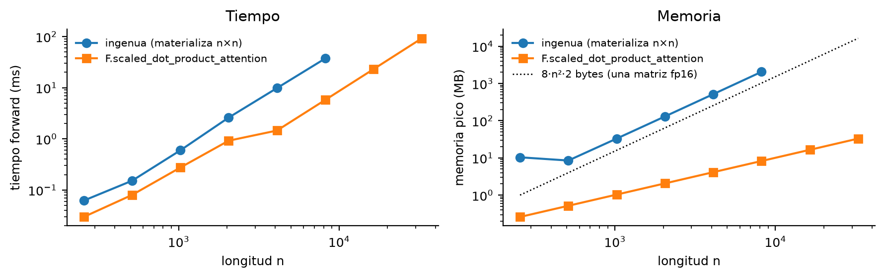
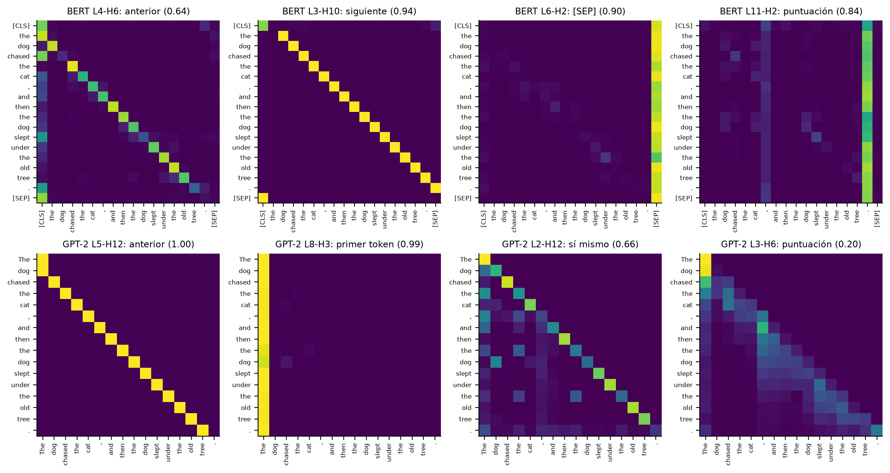
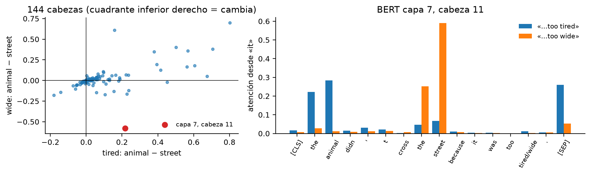
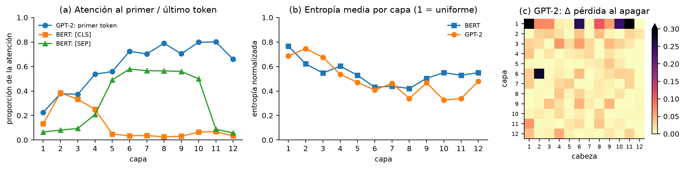

Cuello de botella. En un seq2seq con RNN el encoder comprime toda la oración en un único vector de tamaño fijo (su último estado oculto) y el decoder genera todo a partir de él. Cuanto más larga es la oración, más información debe caber en el mismo vector y más se diluyen las primeras palabras, así que la calidad cae con la longitud. La atención de Bahdanau et al. (2015) guarda todos los estados del encoder y, en cada paso, el decoder calcula un promedio ponderado de ellos (el contexto) según qué tan relevantes son para la palabra que va a generar.
Aditiva vs multiplicativa. Bahdanau puntúa con una pequeña red: vTtanh(W1s + W2h). Luong et al. (2015) usan un producto punto, sTh (o sTWh). La multiplicativa es más eficiente en hardware moderno porque todos los puntajes salen de una sola multiplicación de matrices QKT, que las GPU ejecutan con núcleos especializados, sin la tanh ni la capa intermedia de la aditiva.
Q, K y V. Es una búsqueda «suave» en un diccionario: la consulta (query) se compara con todas las llaves (keys) y, en vez de devolver el valor de la llave exacta, devuelve un promedio de todos los valores (values) ponderado por la similitud. En self-attention Q, K y V son tres proyecciones lineales de la misma secuencia; en cross-attention Q sale del decoder y K y V salen de la salida del encoder.
Qué elimina el Transformer. Sin recurrencia, todas las posiciones se procesan en paralelo (una RNN necesita n pasos secuenciales); cualquier par de tokens queda conectado en un solo paso (camino de longitud O(1) en vez de O(n)); y como el gradiente no atraviesa una cadena de n multiplicaciones, desaparece el desvanecimiento a lo largo del tiempo.
Scaled dot-product attention. Si los componentes de q y k son independientes con media 0 y varianza 1, Var(q·k) = Σi E[qi2]E[ki2] = dk. Sin escalar, con dk grande los puntajes son enormes, la softmax se satura (casi toda la probabilidad en un token) y su jacobiano, diag(p) − ppT, tiende a cero: el gradiente se desvanece. Dividir entre √dk devuelve la varianza a 1. La Figura 1 lo confirma: con dk = 1 024 la softmax sin escalar pone 0.95 en una sola llave y la norma del jacobiano cae a 0.06, contra 0.24 escalada.
Figura 1Efecto del escalamiento por √dk (32 llaves, 2 000 consultas aleatorias)

Multi-head attention. Con h cabezas de dmodel/h cada una aprende su propia proyección y puede atender a un tipo de relación distinto (sintaxis, posición, correferencia) a la vez; una sola cabeza promediaría todo en una única distribución. El número de parámetros no cambia: 4d2 + 4d = 1 050 624 con d = 512 para 1, 8 o 16 cabezas (verificado en el notebook).
Codificación posicional. La self-attention es equivariante a permutaciones: si se reordenan los tokens, las salidas se reordenan igual, así que no sabe el orden. La codificación sinusoidal suma a cada embedding PE(pos, 2i) = sin(pos/100002i/d) y PE(pos, 2i+1) = cos(…), con frecuencias geométricas; es fija y un desplazamiento relativo equivale a una transformación lineal. Los embeddings aprendidos (BERT, GPT-2) son una tabla entrenable que no sirve más allá de la longitud máxima (512 o 1 024). RoPE (Su et al., 2021) rota q y k según la posición, de modo que q·k depende solo de la distancia relativa; es la que usan LLaMA y la mayoría de los modelos actuales.
Bloque completo. Cada subcapa (atención y FFN) va envuelta en una conexión residual, x + F(x), que deja pasar el gradiente, y una LayerNorm, que estabiliza la escala de las activaciones. La FFN (d → 4d → d con una no linealidad) se aplica igual a cada posición. Post-LN normaliza después de sumar, LN(x + F(x)); Pre-LN normaliza antes, x + F(LN(x)), y deja el camino residual como una identidad limpia. Al inicializar 24 capas, en Post-LN la última recibe 7.6 veces más gradiente que la primera, lo que obliga a usar warm-up; Pre-LN entrena estable sin él (Xiong et al., 2020).
Complejidad. La self-attention cuesta O(n2·d) en tiempo y O(n2) en memoria por cabeza, porque materializa la matriz n × n. En la Figura 2 la implementación ingenua crece con pendiente ≈ 2 en ambos ejes y se queda sin memoria con n = 16 384 en una GPU de 6 GB. FlashAttention (Dao et al., 2022) calcula la softmax por bloques en la SRAM sin guardar la matriz: es exacta y deja la memoria en O(n) (33 MB con n = 32 768), pero el tiempo sigue siendo cuadrático y requiere kernels específicos. La atención por ventanas (Beltagy et al., 2020) solo mira w vecinos, O(n·w), y sacrifica las dependencias directas lejanas. La atención lineal (Katharopoulos et al., 2020) cambia la softmax por un kernel φ(q)φ(k)T y reordena el producto, O(n·d2), a costa de una atención menos precisa.
Figura 2Tiempo y memoria de la atención frente a la longitud (RTX 4050, fp16, 8 cabezas, dk = 64)

| Clase o función | Propósito y parámetros relevantes |
|---|---|
F.scaled_dot_product_attention | Atención fusionada; elige FlashAttention o memory-efficient si puede. attn_mask: booleana (True = atender) o aditiva; dropout_p: dropout sobre los pesos (solo en entrenamiento); is_causal: máscara triangular sin construirla; scale: reemplaza 1/√dk. No devuelve los pesos. |
nn.MultiheadAttention | embed_dim y num_heads (cada cabeza mide embed_dim/num_heads); batch_first: entrada (B, n, d) en vez de (n, B, d); kdim, vdim: tamaño de K y V si vienen de otra fuente (cross-attention). Forward: key_padding_mask (B, n) oculta el padding, attn_mask (n, n) oculta pares (True = no atender), need_weights devuelve los pesos y average_attn_weights los promedia entre cabezas. |
nn.TransformerEncoderLayer | Bloque completo: d_model, nhead, dim_feedforward (ancho de la FFN), dropout y norm_first (True = Pre-LN). nn.Transformer.generate_square_subsequent_mask(n) crea la máscara causal: 0 en y bajo la diagonal y −∞ encima. |
output_attentions=True | Hugging Face devuelve outputs.attentions: un tensor por capa de forma batch × cabezas × n × n (12 capas × 12 cabezas en BERT-base y GPT-2). Requiere attn_implementation="eager": los kernels fusionados no calculan los pesos. |
Tres tokens con d = dk = 2: X = [[1, 0], [0, 1], [1, 1]], WQ = [[1, 0], [1, 1]], WK = [[1, 1], [0, 1]] y WV = [[1, 0], [0, 2]]. Se obtienen Q = XWQ, K = XWK y V = XWV; para cada fila de QKT se divide entre √2 = 1.414, se aplica la exponencial, se normaliza (softmax) y se calcula la salida Σj aijvj. En la tabla, k y v de la fila j son los del token j.
| Token | q | k | v | q·k1..3 | ÷ √2 | exp (suma) | Pesos a | Salida |
|---|---|---|---|---|---|---|---|---|
| 1 | [1, 0] | [1, 1] | [1, 0] | 1, 0, 1 | 0.707, 0, 0.707 | 2.03, 1.00, 2.03 (5.06) | 0.401, 0.198, 0.401 | [0.802, 1.198] |
| 2 | [1, 1] | [0, 1] | [0, 2] | 2, 1, 3 | 1.414, 0.707, 2.121 | 4.11, 2.03, 8.34 (14.48) | 0.284, 0.140, 0.576 | [0.860, 1.432] |
| 3 | [2, 1] | [1, 2] | [1, 2] | 3, 1, 4 | 2.121, 0.707, 2.828 | 8.34, 2.03, 16.92 (27.29) | 0.306, 0.074, 0.620 | [0.926, 1.389] |
Por ejemplo, la salida del token 2 es 0.284·[1, 0] + 0.140·[0, 2] + 0.576·[1, 2] = [0.860, 1.432]. El token 3 atiende sobre todo a k3, la llave más alineada con q3. Con máscara causal las filas 1 y 2 quedan [1, 0, 0] y [0.670, 0.330, 0]; la 3 no cambia. El código da lo mismo.
Verificaciones. La implementación propia coincide con F.scaled_dot_product_attention sin máscara, con is_causal, con una
attn_mask de padding y con scale = 0.5 (error máximo 4.8 × 10−7). La multi-head propia, con los pesos copiados de
nn.MultiheadAttention, reproduce sus salidas y sus pesos por cabeza con máscara causal y key_padding_mask (error 1.2 × 10−7).
Patrones por cabeza. Para cada una de las 144 cabezas se midió, en ocho oraciones, la atención media al token anterior, al siguiente, a sí mismo, a [CLS] o primer token, a [SEP], a la puntuación y a otras apariciones de la misma palabra. La Figura 3 muestra la cabeza más representativa de cada patrón en «The dog chased the cat, and then the dog slept under the old tree.». Como describen Clark et al. (2019), hay cabezas posicionales casi perfectas (BERT L3-H10 mira al siguiente token con 0.94; GPT-2 L5-H12, al anterior con 1.00), cabezas que mandan todo a [SEP] (41 de 144 en BERT le dan más de la mitad) o al punto final, y en GPT-2 cabezas que ponen el 99 % en el primer token (L8-H3). Además, BERT L2-H12 conecta «dog» con el otro «dog» (0.48 en promedio).
Figura 3Mapas de atención de cuatro cabezas de capas distintas en BERT (arriba) y GPT-2 (abajo); filas = consulta, columnas = llave

«it» → «animal» o «street». En 22 de las 144 cabezas de BERT «it» atiende más a «animal» con tired y más a «street» con wide. La más clara es L7-H11: con tired da 0.28 a «animal» y 0.07 a «street»; con wide, 0.01 y 0.59 (Figura 4). La mayoría de las cabezas, en cambio, prefiere «animal» en ambos casos (cuadrante superior derecho). En GPT-2 esto no puede pasar: «it» aparece antes de tired/wide y la máscara causal se lo oculta.
Figura 4Correferencia en BERT: diferencia animal − street por cabeza en las dos oraciones (izquierda) y atención desde «it» en L7-H11 (derecha)

GPT-2 causal y attention sinks. En todas las capas y cabezas el valor máximo por encima de la diagonal es exactamente 0 y cada fila suma 1: la matriz es triangular inferior. El primer token recibe el 22 % de la atención en la capa 1 y entre el 70 y el 80 % en las capas 6 a 11 (Figura 5a). No es por su contenido: cualquier palabra en la primera posición («The», «Paris», «Water», …) recibe ≈ 0.53, y esa misma palabra más adelante solo ≈ 0.05. Es un attention sink (Xiao et al., 2023): como la softmax obliga a repartir una masa de 1, las cabezas que no necesitan información la «estacionan» en un token que todas las posiciones ven y cuyo valor aporta poco (por eso StreamingLLM conserva esos tokens en la caché KV). BERT hace lo mismo con [CLS] (capas 2–4) y [SEP] (capas 5–10).
Entropía por capa. Normalizada (1 = uniforme), baja de 0.77 en la capa 1 a 0.42 en la 8 en BERT y de 0.69 a 0.34 en GPT-2 (Figura 5b): las capas profundas atienden de forma más concentrada. BERT vuelve a abrirse en las últimas capas (0.55). Gran parte de esa concentración es el sink. Al apagar cabezas de GPT-2 una por una (Figura 5c), 71 de 144 cambian la pérdida en menos de 0.01 y solo 6 la suben más de 0.1, mientras que L1-H1 y L1-H11 la suben 2.5 y 2.1 nats.
Figura 5Atención al primer token, entropía por capa y ablación de cabezas en GPT-2 (Δ pérdida sobre un texto de 161 tokens)

¿Por qué la atención permitió modelos más grandes? Una capa procesa los n tokens con unas pocas multiplicaciones de matrices en paralelo, en lugar de n pasos secuenciales, y aprovecha GPU con miles de núcleos; además, el camino entre dos tokens es de un paso, así que las dependencias lejanas se aprenden sin desvanecimiento. El precio es el costo cuadrático, aceptable mientras n no supere mucho a d (n2d frente a nd2 de una RNN).
¿Se especializan las cabezas? ¿Todas son útiles? Sí hay especialización: cabezas posicionales, de separadores, de puntuación, de la misma palabra y de correferencia (L7-H11). Pero no todas son útiles por separado: la mitad casi no afecta la pérdida y dos cabezas de la capa 1 concentran el efecto. Aun así, la redundancia tiene un límite: en un texto distinto, apagar el 10, 25 y 50 % de las menos importantes sube la perplejidad de 23.9 a 26.9, 30.9 y 46.1, en línea con Michel et al. (2019).
¿Los pesos de atención explican las decisiones? Solo en parte. Jain y Wallace (2019) muestran que los pesos se correlacionan poco con la importancia medida por gradientes y que distribuciones muy distintas dan la misma predicción. Wiegreffe y Pinter (2019) responden que esas distribuciones no las produce el modelo entrenado y que la atención puede ser una explicación plausible, aunque no necesariamente fiel. Nuestros resultados apoyan esa postura intermedia: L7-H11 ofrece una explicación plausible de la correferencia, pero es una cabeza de 144, y en GPT-2 el 70–80 % de la atención va a un token sin contenido, así que un peso alto no significa importancia. Para afirmar causalidad se necesitan intervenciones como la ablación.
¿Cuándo preferir una RNN o una CNN? Con datos en streaming que necesitan memoria constante por paso (RNN o modelos de estado como Mamba), en dispositivos con poca memoria o latencia estricta, y con pocos datos, donde el sesgo inductivo de la CNN (localidad e invariancia a traslaciones en imágenes o audio) generaliza mejor.
Documentos de 100 000 tokens. La matriz de una sola cabeza tendría 1010 entradas (20 GB en fp16), por cada cabeza y cada capa. FlashAttention resuelve la memoria, pero no el tiempo: extrapolando la Figura 2, ≈ 0.9 s por capa solo en la atención. Consideraría atención por ventanas con tokens globales (Longformer), atención lineal o modelos de estado, RoPE con interpolación para extender el contexto, o partir el documento y recuperar solo los fragmentos relevantes (RAG).
Bahdanau, D., Cho, K., & Bengio, Y. (2015). Neural machine translation by jointly learning to align and translate. ICLR. https://arxiv.org/abs/1409.0473
Beltagy, I., Peters, M. E., & Cohan, A. (2020). Longformer: The long-document transformer. https://arxiv.org/abs/2004.05150
Clark, K., Khandelwal, U., Levy, O., & Manning, C. D. (2019). What does BERT look at? An analysis of BERT’s attention. BlackboxNLP, 276–286.
Dao, T., Fu, D. Y., Ermon, S., Rudra, A., & Ré, C. (2022). FlashAttention: Fast and memory-efficient exact attention with IO-awareness. NeurIPS.
Jain, S., & Wallace, B. C. (2019). Attention is not explanation. NAACL-HLT, 3543–3556.
Katharopoulos, A., Vyas, A., Pappas, N., & Fleuret, F. (2020). Transformers are RNNs: Fast autoregressive transformers with linear attention. ICML.
Luong, M.-T., Pham, H., & Manning, C. D. (2015). Effective approaches to attention-based neural machine translation. EMNLP, 1412–1421.
Michel, P., Levy, O., & Neubig, G. (2019). Are sixteen heads really better than one? NeurIPS.
Su, J., Lu, Y., Pan, S., Murtadha, A., Wen, B., & Liu, Y. (2021). RoFormer: Enhanced transformer with rotary position embedding. https://arxiv.org/abs/2104.09864
Vaswani, A., Shazeer, N., Parmar, N., Uszkoreit, J., Jones, L., Gomez, A. N., Kaiser, Ł., & Polosukhin, I. (2017). Attention is all you need. NeurIPS. https://arxiv.org/abs/1706.03762
Wiegreffe, S., & Pinter, Y. (2019). Attention is not not explanation. EMNLP-IJCNLP, 11–20.
Xiao, G., Tian, Y., Chen, B., Han, S., & Lewis, M. (2023). Efficient streaming language models with attention sinks. https://arxiv.org/abs/2309.17453
Xiong, R., Yang, Y., He, D., Zheng, K., Zheng, S., Xing, C., Zhang, H., Lan, Y., Wang, L., & Liu, T. (2020). On layer normalization in the transformer architecture. ICML.
Repositorio: https://github.com/ecarcamo/CC3092-DEEP-LEARNING/tree/main/HTD2